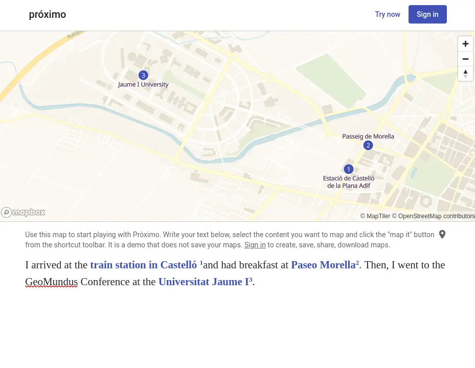
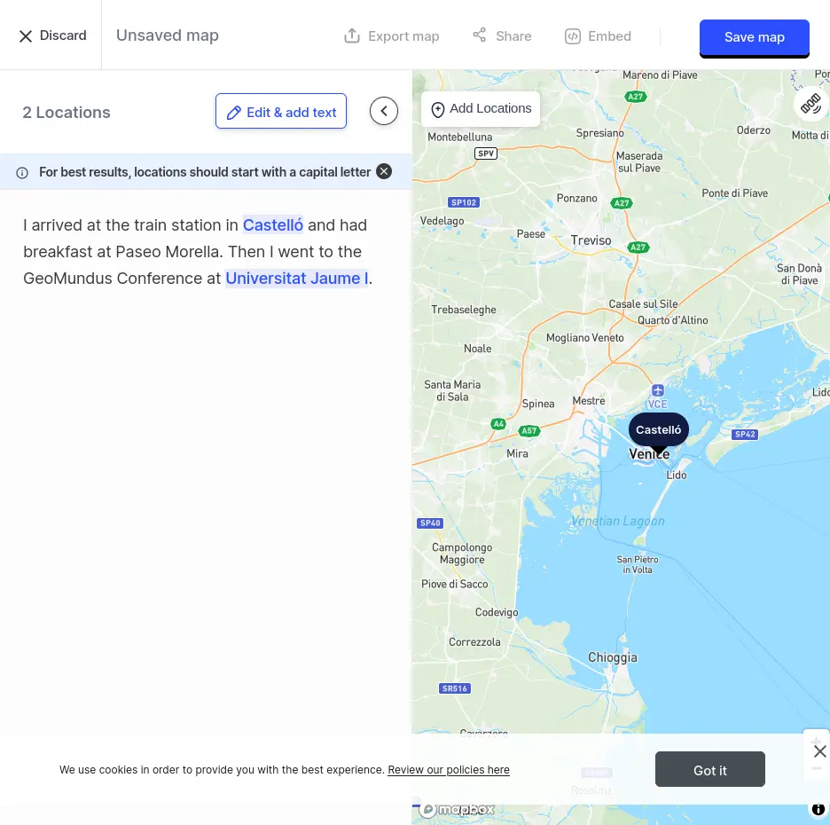

The future of (Developer) Tooling for Geospatial
María Arias de Reyna Domínguez
@delawen@floss.social - @delawen@twitter.com
Senior Software Engineer
María Arias de Reyna Domínguez
@delawen@floss.social - @delawen@twitter.com
Senior Software Engineer


What drives innovation and defines future tooling
The best way to infer our future is to study our evolution.
Mappa di Eratostene
Census Bureau cartographers prepare maps for the 1960 census.
Which leads to high quality Big Data
Business Intelligence for GeoSpatial

//Start with a timer that executes the operation every 10 seconds
from("timer:java?period=10000")
//Access the CSV file which can be on an api or storage device
.to("{{source.csv}}")
//unmarshal and split the workflow per row
.unmarshal().split(body()).streaming()
//process each row
//the process is defined in a separated file
.process(processCsv)
//push the results to the following API
.to("https://nominatim.example.com/reverse")
//the returned XML is also processed
.unmarshal().jacksonxml()
//again, the processor is defined in a separated file
.process(processXML)
//Prepare an SQL query based on the result of the process
.setBody().simple("SELECT info FROM table WHERE id like '${exchangeProperty.pollutant}'")
//send the SQL query to the database
.to("jdbc:postgresBean?readSize=1")
//collect the result and process it
.process(processDB)
//reunite the parallel streams that started on the csv processing
.aggregate(constant(true), aggregationStrategy)
.completionSize(5)
//given the list of outputs per row in csv, process it
.process(buildGeoJSON)
//store the result in another database
.to("mongodb:mongoBean?database=example&collection=mySpatialObjects&operation=insert")
When we met "Artificial Intelligence"
Let's focus on what we can, not what we should.
Generate a map based on locations described in a text.
Instantly turn text sources and ChatGPT prompts into insightful interactive geo maps.
